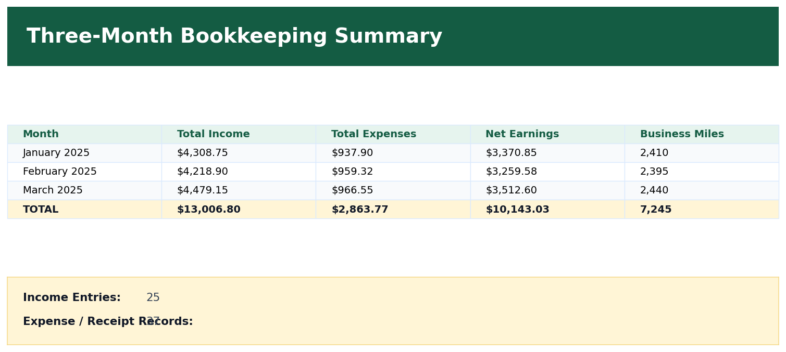

Purpose
Present the complete 3-month bookkeeping result in a clear summary format.
Simple Example
The final summary shows total income, total expenses, net earnings, business miles, income entries, expense entries, and receipt records.
Simple Bookkeeping Decision Rule
The final summary should only be prepared after income, expenses, mileage, receipts, and monthly totals have been reviewed.
Screenshot: Three-Month Bookkeeping Summary

Analysis
The final 3-month summary shows $13,006.80 income, $2,863.77 expenses, $10,143.03 net earnings, 7,245 business miles, 25 income entries, and 37 expense/receipt records across the sample period.
Result
The delivery driver bookkeeping project is complete and ready to present in a portfolio as an Excel-based bookkeeping workflow.